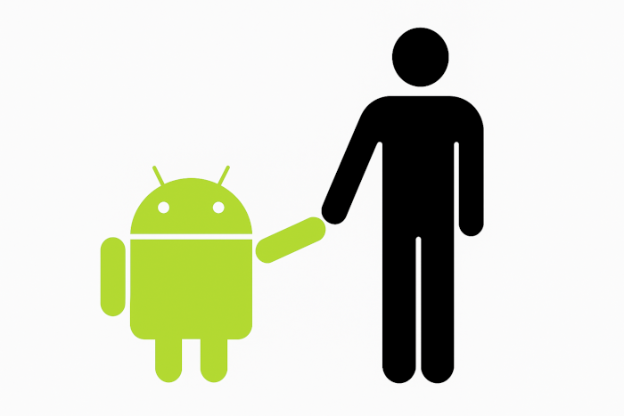

HISTÓRIA DO MASCOTE DO ANDROID
Provavelmente você sabe que o sistema operacional Android, mantido pelo Google, é um dos mais utilizados para dispositivos móveis em todo o mundo. Mas talvez você não saiba que o seu simpático mascote tem um nome e uma história muito curiosa? Pois acompanhe esse artigo para aprender muita coisa sobre esse robozinho.
A PRIMEIRA VERSÃO
A primeira tentativa de criar um mascote surgiu em 2007 e veio de um desenvolvedor chamado Dan Morrill📎. Ele conta que abriu o Inkscape📎 (software livre para vetorização de imagens) e criou sua própria versão de robô. O objetivo era apenas personificar o sistema apenas para a sua equipe, não existia nenhuma solicitação da empresa para a criação de um mascote.
Essa primeira versão bizarra até foi batizada em homenagem ao seu criador: seriam os Dandroids
SURGE UM NOVO MASCOTE
A ideia de ter um mascote foi amadurecendo e a missão foi passada para uma profissional da área. A ilustradora Russa Irina Blok📎, também funcionária do Google, ficou com a missão de representar o pequeno robô de uma maneira mais agradável.
Detalhe: fiquei com preguiça de pegar a foto dela e usei a dele.
A ideia principal da Irina era representar tudo graficamente com poucos traços e de forma mais chapada. O desenho também deveria gerar identificação rápida com quem o olha. Surgiu então o Bugdroid, o novo mascote do Android.
A principal inspiração para os traços do novo Bugdroid veio daqueles bonequinhos que ilustram portas de banheiro para indicar o gênero de cada porta. Conta a lenda que a artista estava criando em sua mesa no escritório do Google e olhou para o lado dos banheiros e a identificação foi imediata: simples, limpo, objetivo.
Quer aprender mais ?
Outro assunto curioso em relação ao ANdroid é que cada versão sempre foi nomeada em homenagem a um doce, em ordem alfabética a partir da versão 1.5 até a 9.0
- 1.5 - Cupcake
- 1.6 - Donut
- 3.0 - Eclair
- 2.2 - Frovo
- 4.1 - JellyBean
- 4.4 - KitKat
- 5.0 - Lolipop
- 6.0 - Marshmallow
Infelizmente, o Android Q não existiu, poi o Google resolveu pôr fim a essa divertida prática e começou a usar numerações, o que deu origem ao Android 10
Acesse aqui o site Android History📎 para conhecer a sequencia das versões "adocicadas" e o que cada uma trouxe para o sistema android
Felizmente o nosso papo se encerra aqui, quero agradecer a todos os leitores que acompanharam até aqui! fique sempre de olho na nossa página pois sempre estamos postando novos conteúdos!